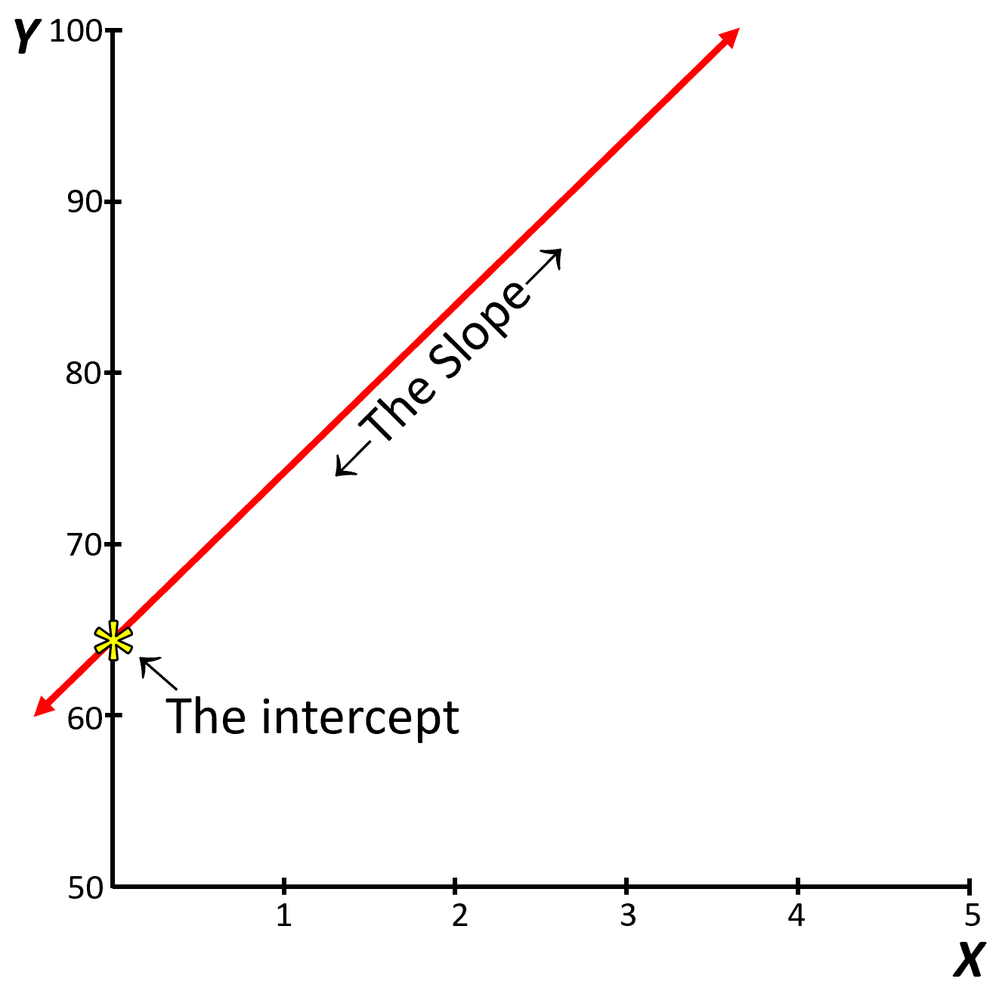
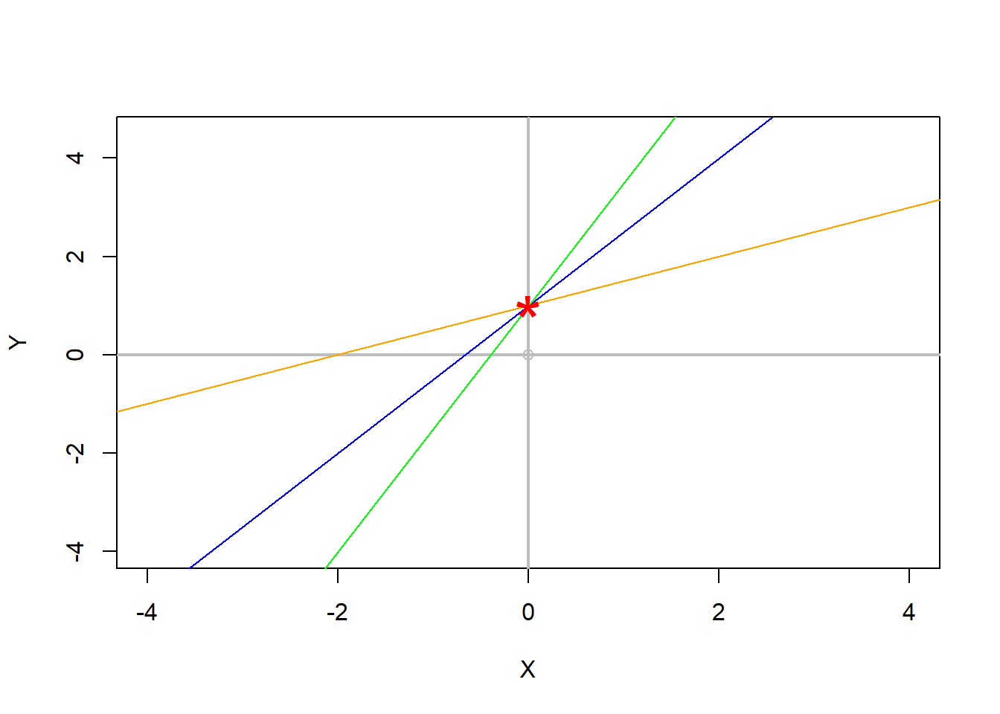
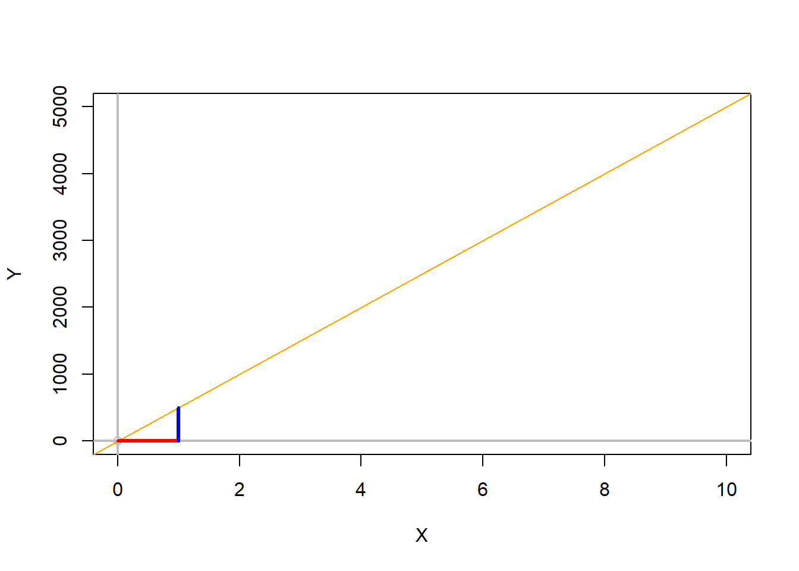

Parts of a line
Before we get into the needy-greedy of linear regression models, we should start by knowing how a line can be constructed.
In practical terms, an specific straight line, in a XY space, can be drawn by knowing just two parameters: the intercept and the slope.

Figure 7.1: The slope and the intercept
The intercept is basically the position in the Y-axis where the regression line crosses, or the value of Y when X=0.
The slope is the inclination of that line, or the change in Y divided by X. It also indicates the mount by which Y changes for unit of change in X; more on this later.
With the slope and the intercept you can draw any line you like.
Let’s check what the intercept and the slope do to a line.
For plotting a line in R, we use the abline function, which we used before for drawing horizontal or vertical lines. You can also use that R-function to draw lines with specific slopes and intercepts. Let’s try.
Lets plot three lines with different slopes, but the same intercept.
#play around with the lines of code below to see how they work
#First lets create an empty plot and make the x and y axis nicer.
plot(0, 0,xlab="X",ylab="Y", xlim=c(-4,4),ylim=c(-4,4.5),col="grey")
abline(h=0,lwd=2, col="grey",lty=1)
abline(v=0,lwd=2, col="grey",lty=1)
# lets draw a first line with an intercept of 1, and a slope of 0.5.
# In abline, the first number will be the intercept and the second will be the slope.
Intercept=1 #lets create a variable for the intercept, which i choose to call intercept and make that variable = 1
Slope=0.5 #lets create a variable for the slope, which i choose to call slope and make that variable = 0.5
abline(Intercept, Slope, col="orange") #lets plot the line, with my slope and intercept and make it orange to differentiate it
# now, draw another line keeping the intercept the same and increase the slope to 1.5
Slope=1.5
abline(Intercept, Slope, col="blue") #lets make it blue to differentiate it
# try keeping the intercept the same and increase the slope to 2.5
Slope=2.5
abline(Intercept, Slope, col="green") #lets make it green to differentiate it
#We can verify the intercept, by plotting the point in Y, where the line intercept.
points(0,Intercept, pch="*",cex=3, col="red") #remember the intercept is when x=0.
Lets now change the intercept, but keep the slope the same
#play around with the parameters in the code below to see how they work
#plot first
plot(0, 0,xlab="X",ylab="Y", xlim=c(-4,4),ylim=c(-4,4.5),col="grey")
abline(h=0,lwd=2, col="grey",lty=1)
abline(v=0,lwd=2, col="grey",lty=1)
# now try a combination of difference intercepts but the same slope.
Intercept=1
Slope=0.5
abline(Intercept, Slope, col="orange") #lets plot the line, and make it orange to differentiate it
# keep the slope the same and increase the Intercept to 2
Intercept=2
abline(Intercept, Slope, col="blue") #lets make it blue to differentiate it
# keep the slope the same and increase the Intercept to 3
Intercept=3
abline(Intercept, Slope, col="green") #lets make it green to differentiate it
How to interpret the slope
The slope should be interpreted as the amount of change in Y for a single unit of change in X.
Let’s say, you are told that a given relationship between total rainfall (in litters) and the amount of time (in hours) is 500. From that slope alone, we can tell now that for each extra hour, there will be 500 litters of water falling.
To contextualize the slope graphically, you can take any point along the trendline, and move horizontally one unit; the difference between the Y-point at the first X and the Y-point at X+1, is your slope…Lets check.
#plot first
plot(0, 0,xlab="X",ylab="Y", xlim=c(0,10),ylim=c(0,5000),col="grey")
abline(h=0,lwd=2, col="grey",lty=1)
abline(v=0,lwd=2, col="grey",lty=1)
#lets draw a trend line with a slope of 500, that intercepts the origin.
Intercept=0
Slope=500
abline(Intercept, Slope, col="orange") #lets plot the trend line, and make it orange to differentiate it
#lets move one unit along X, starting at zero
segments (0,0,1,0, col="red",lwd=3) #lets make that segment red
#from that point, X+1, lets move up 500 units, if the calculation is correct, then that segment of 500 units in Y should finish at the interception with the trend line...lets see
segments (1,0,1,500, col="blue",lwd=3) #here I draw a segment starting a x=1, y=0...until x=1, y=500
How to interpret the intercept
The intercept is the expected value of Y when X=0.
Say that among children there is a relationship between age (in years) and size (in centimeters), and the Y-intercept is 35cm. What does that tell you?.
So since the Y-intercept is the value at which X=0, then a Y-intercept of 35cm means the size of a child when he is zero years of age. Basically, children on average are born at 35cm of size.